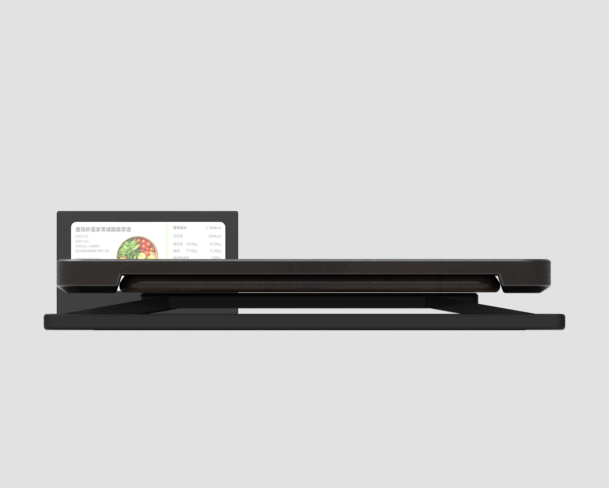
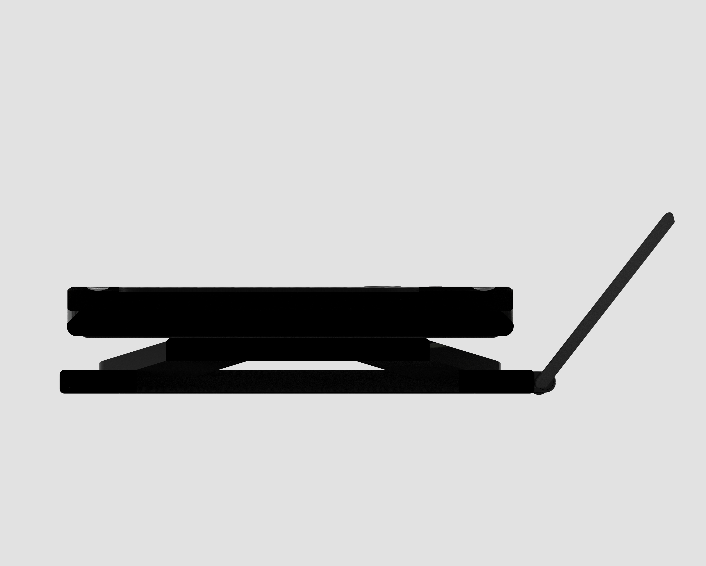

产品设计 / 智能家居 / 2026
衡序案板Smart Health Cutting Board
一款将传统案板、称重传感、营养分析与健康管理结合的智能厨房工具，让每一次备菜都更精准、更安心。
健康烹饪精准控制科学高效便捷管理

01 / Product idea
把厨房里的“凭感觉”变成可理解的数据
案板保留熟悉的切配姿态，同时加入重量、尺寸与菜谱信息反馈。用户可以在切菜过程中获得更清晰的营养提示，降低健康饮食的门槛。
02 / Design system
完整设计展示板
从灵感来源、功能细节和产品尺寸，到 APP 交互与使用场景，形成一套完整的产品说明系统。

03 / Process
结构、功能与交互展开
通过不同视角的渲染图和过程画板，展示案板的升降屏、隐藏式收纳、可拆卸案板与称重区域。


04 / Product renders
产品形态与细节
多角度呈现产品的结构关系、材质层次与屏幕使用状态，突出“稳、准、易清洁”的设计语言。

